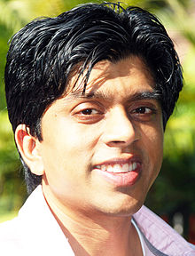

Faisal I. Farooqui (born: 23 April) is an entrepreneur, best known as the
Founder and Chief Executive Officer (CEO) of MouthShut.com, a user-generated
consumer review and feedback service.
Faisal is a recognized advocate of freedom
of expression on the Internet- he challenged India's restrictive IT Rules in the
Supreme Court which resulted in the Honorable Supreme Court striking down
India's draconian Sec. 66A and reading down of many other sections.
(MouthShut.com & Faisal Farooqui v/s Union of India)
Farooqui has been featured in Fortune, Entrepreneur magazine, Economic Times,
CNN, BBC New York Times blog, UK's Financial Express, CNBC, NDTV, Zee, The Times
of India and other magazines, newspapers and TV channels.
He has been invited to speak on entrepreneurship, technology, social media and
marketing seminars worldwide. Besides he has been guest lecturer at colleges
such as American University in Dubai, IIM Ahmedabad, IIT Mumbai, NITIE Mumbai
and Google, NASSCOM, IAMAI. Faisal is a TiE charter member and mentor.
In 2012, Entrepreneur Magazine named Faisal among the Top Business People in
India and was included in a list of Entrepreneurs who have created History.
Earlier in 2009, Farooqui was named as a Youth Icon India's national TV news
channel (Doordarshan)
The British High Commission (British Embassy in Delhi) announced Faisal among 50
Indians to its list of Young Leaders who have demonstrated exceptional
leadership and symbolize optimism of the country.
Faisal recognizes Hindi movie legend Dilip Kumar as his mentor and idol. Faisal
accompanied Dilip Kumar and Saira Banu for Umrah Pilgrimage and spoke about the
journey with Arab News